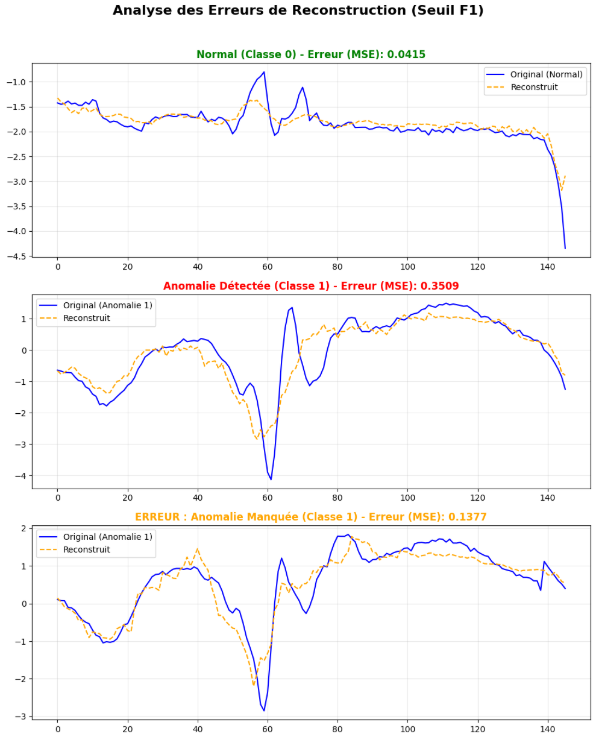
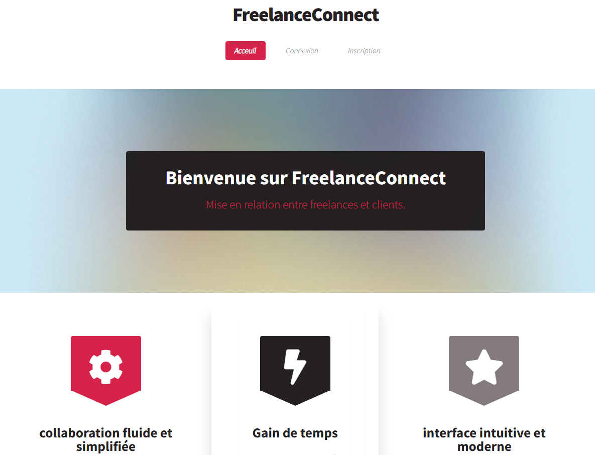
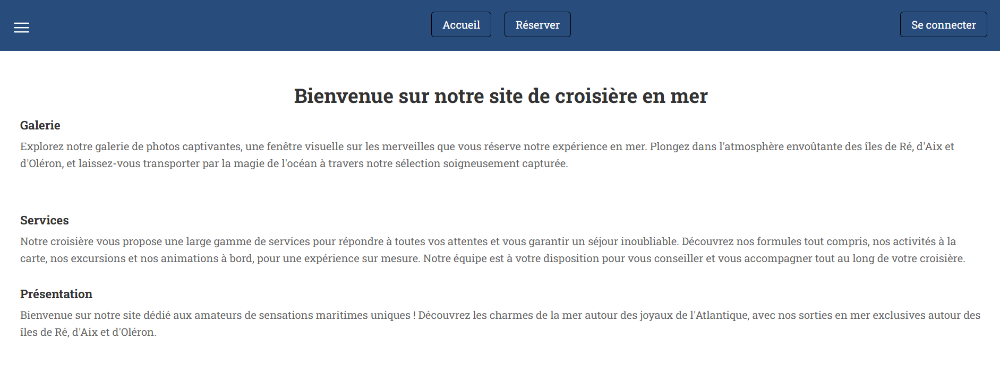
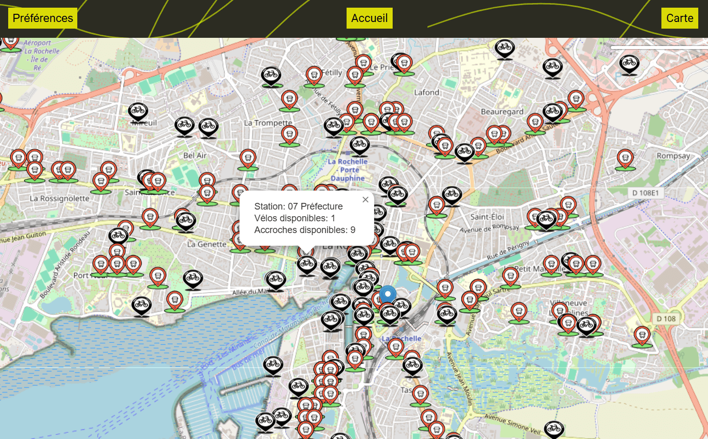
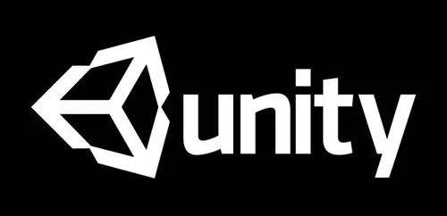

À propos de moi
Passionné par le développement logiciel et le traitement du signal, je conçois des applications qui allient rigueur technique et impact concret. Mon parcours en L3 Informatique, spécialité Traitement du Signal et Vision Embarquée, m'a amené à explorer l'analyse de signaux ECG par réseaux de neurones, le développement web full-stack, et l'algorithmique avancée.
Mon objectif : intégrer un Master Architecte Logiciel ou MIX à La Rochelle Université, puis évoluer vers un poste d'ingénieur logiciel ou data dans le numérique.
🔬 En ce moment
Approfondissement du traitement du signal (MATLAB, Python) · Stage à venir chez Alltech Consulting — Java Spring Boot.
Formation
Licence Informatique — L3 en cours
Université de La Rochelle | 2022 – 2026
Parcours développement web en L2, puis Traitement du Signal et Vision Embarquée en L3.
Projets en équipe, méthodologie Agile, traitement numérique du signal, développement full-stack.
Baccalauréat général
Lycée Merleau-Ponty · Rochefort | 2021
Mention Assez Bien
Compétences techniques
💻 Langages
⚙️ Frameworks & back
📊 Signal & IA
🗄️ Web & données
🔧 Outils
🌍 Langues
Expérience
Stage développeur back-end
Alltech Consulting · La Rochelle
Développement d'une application back-end en Java Spring Boot — architecture REST, intégration continue, déploiement.
Projets réalisés

🫀 Étude d'ECG
Identification automatique d'anomalies cardiaques dans des signaux ECG par réseau de neurones.
- Acquisition et prétraitement des signaux (filtrage, normalisation)
- Conception et entraînement d'un réseau de neurones
- Évaluation : précision, rappel, matrice de confusion
Technologies : Python, TensorFlow, NumPy, Matplotlib

🤝 FreelanceConnect
Plateforme web de mise en relation clients/freelances avec publication et candidature à des missions.
- Authentification sécurisée (hashage)
- Gestion des profils, missions et filtres
- Interface d'administration, optimisation SQL
Technologies : Symfony, PHP, Twig, MySQL, Bootstrap
GitHub →
⛵ LocABoat
Plateforme de location de bateaux avec gestion des utilisateurs, embarcations et réservations.
- Comptes utilisateurs et authentification
- Catalogue avec disponibilité en temps réel
- Gestion des conflits de dates
Technologies : PHP, PostgreSQL, HTML5, CSS3
GitHub →
🚲 Dev Durable
Application web géolocalisée pour découvrir les stations de vélo et bus à proximité.
- Géolocalisation en temps réel
- Carte interactive (Leaflet.js)
- API REST open data La Rochelle
Technologies : JavaScript vanilla, Leaflet.js, HTML5, CSS3
GitHub →🌳 Arbres AVL
Implémentation complète d'arbres binaires équilibrés AVL en C avec types génériques.
- Rotations simples et doubles, rééquilibrage automatique
- Généricité via pointeurs void, gestion manuelle mémoire
Technologies : C, algorithmique avancée
GitHub →
🎮 Jeu de plateformes 2D
Jeu de plateformes 2D développé avec Unity — personnage, obstacles, gestion des collisions.
Technologies : Unity, C#
Projet personnel de découverte du développement de jeux vidéo.
Centres d'intérêt
Intéressé par mon profil ?
Stage à venir chez Alltech Consulting · Candidat Master 2026/2027